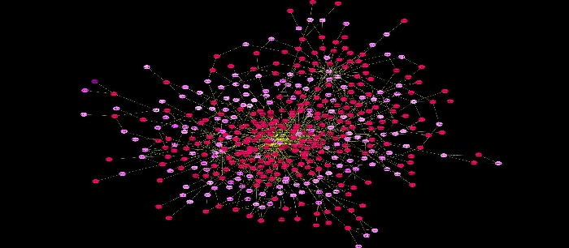
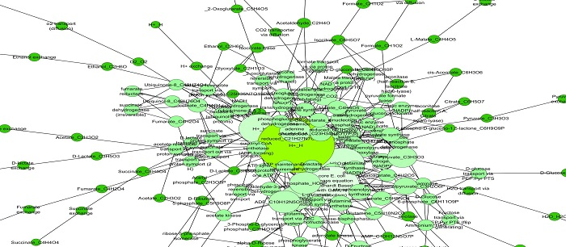
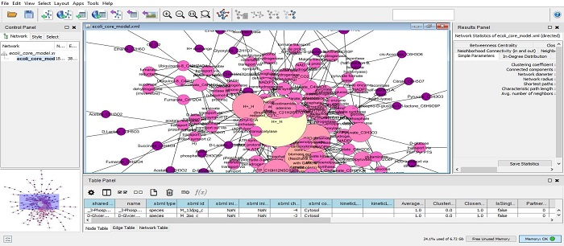
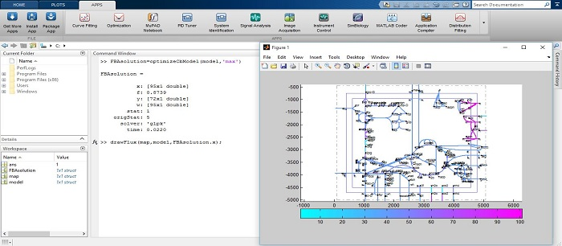
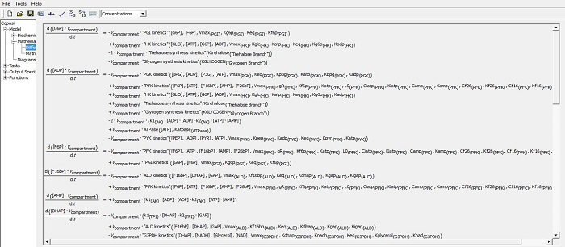

“A model is a mathematical representation of the modelers’s reality,
a way of capturing some aspects of a particular reality within the framework of a mathematical apparatus that provides us with a means for exploring the properties of the reality mirrored in the model.”
(J.
L. Casti )




